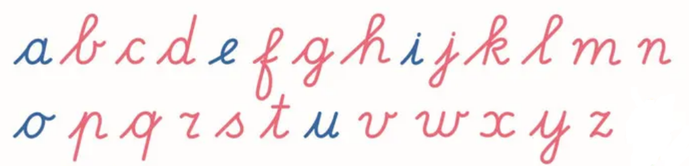

Boven: de referentie uit de klas (letters.png). Daaronder: alle 26 letters in het
gekozen font Lusletters (standaardhelling) met stylistic set ss01
(aanhaal vanaf de grondlijn) en een dikkere lijn, precies zoals de app ze toont via css/fonts.css.
Klinkers blauw, medeklinkers roze/rood.

Controleer deze vormen tegen het schrijfschrift van de klas: de hoofdletters komen uit hetzelfde font (Lusletters) en zijn niet apart nagetekend.
Drukletters uit de fontstapel in css/fonts.css: op deze pc Century Gothic,
met de enkelvoudige a en g van het Montessori-drukletteralfabet.
Staat geen van die fonts op de pc, dan valt de browser terug op de systeemletter en is de a dubbel.
aap boom kat zon fee vis